Mobile Stand Design in Fusion 360
← Back to PortfolioOn Week 2 Day 1, I designed a Mobile Stand using Autodesk Fusion 360 under the guidance of Kiran Sir. The objective was to learn CAD modeling, sketching, extrusion, revolve operations, and rendering. This project helped me understand the complete workflow of product design from concept to final visualization.
We opened Fusion 360 under the Education License and verified that all units were set to millimeters. Kiran Sir explained that proper unit settings prevent scaling errors during manufacturing.
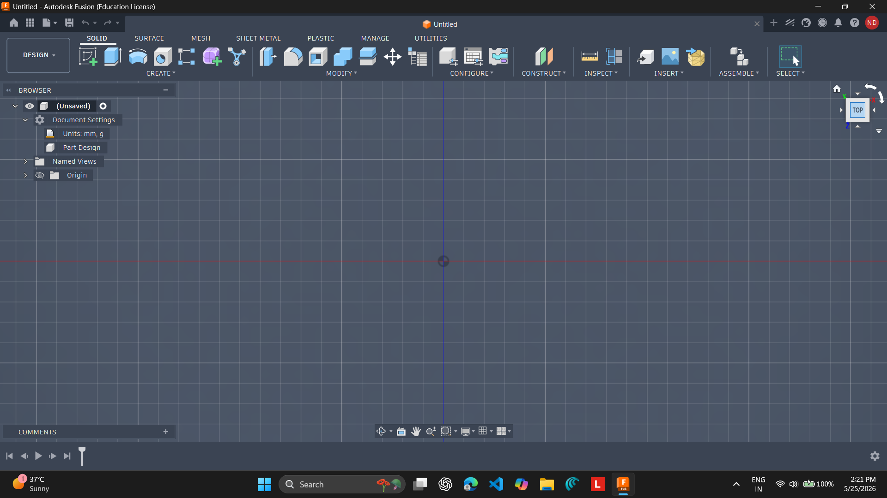
Using Create Sketch on the Top Plane (XY), a rectangle was created to serve as the foundation of the mobile stand.
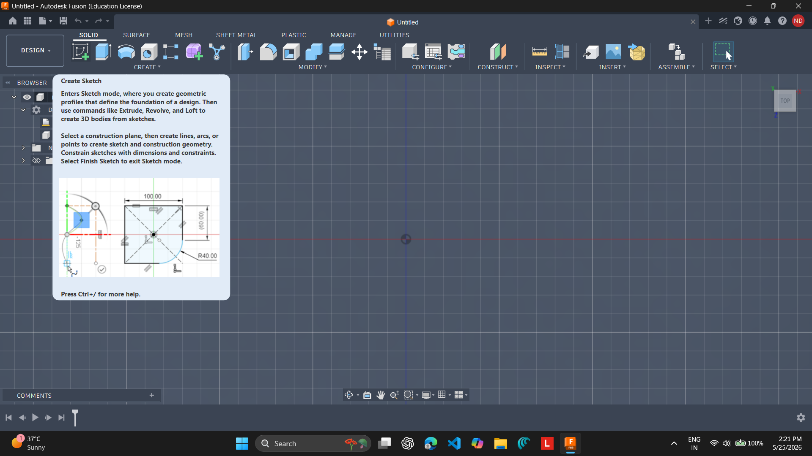
A rectangular profile was drawn and dimensioned accurately. Constraints were applied to maintain precision.
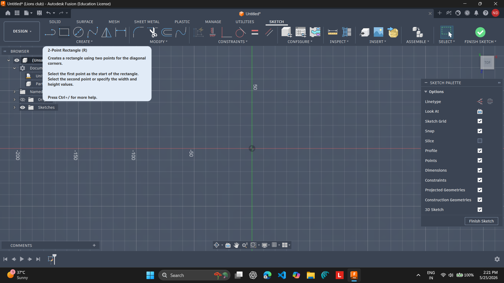
The rectangle was modified with rounded corners to improve the appearance and ergonomics of the stand.
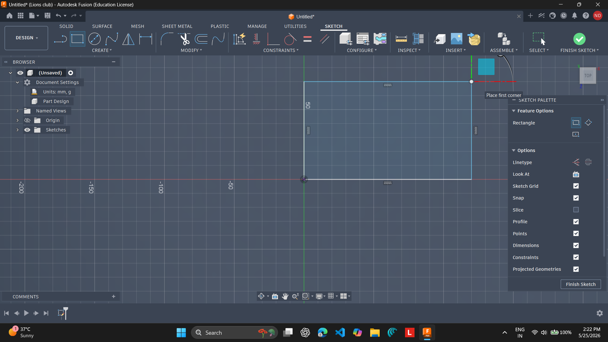
The sketch was extruded to create the solid base of the mobile stand. This provided the structural platform for the design.
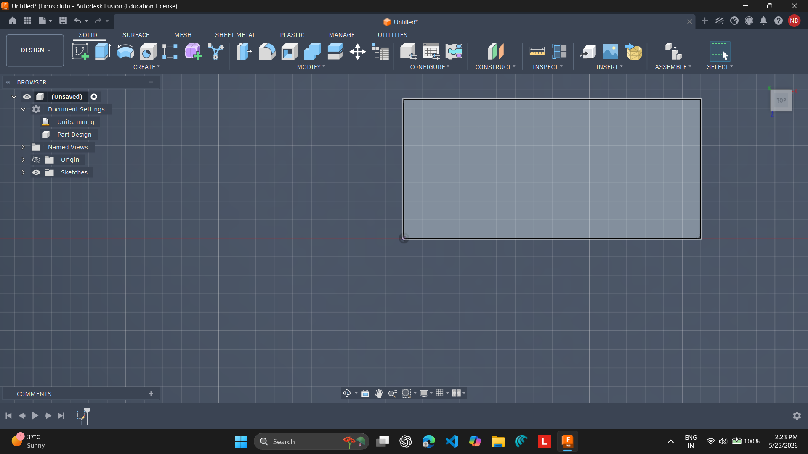
A new sketch was created on the rear side of the base to design the support that would hold the phone.
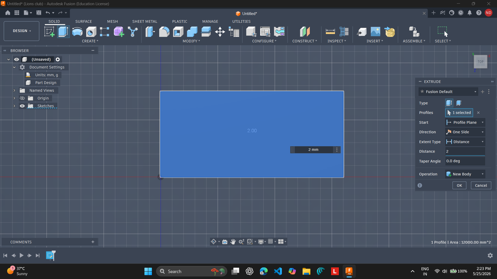
Using the Move/Rotate tool, the support was tilted to approximately 70 degrees, creating an ergonomic viewing angle.
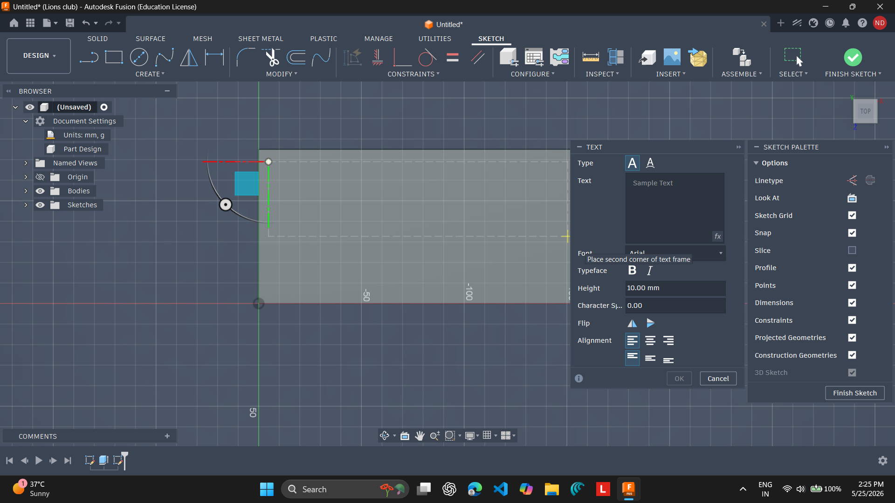
The Text tool was used to add personalized text on the stand, giving the design a professional identity.
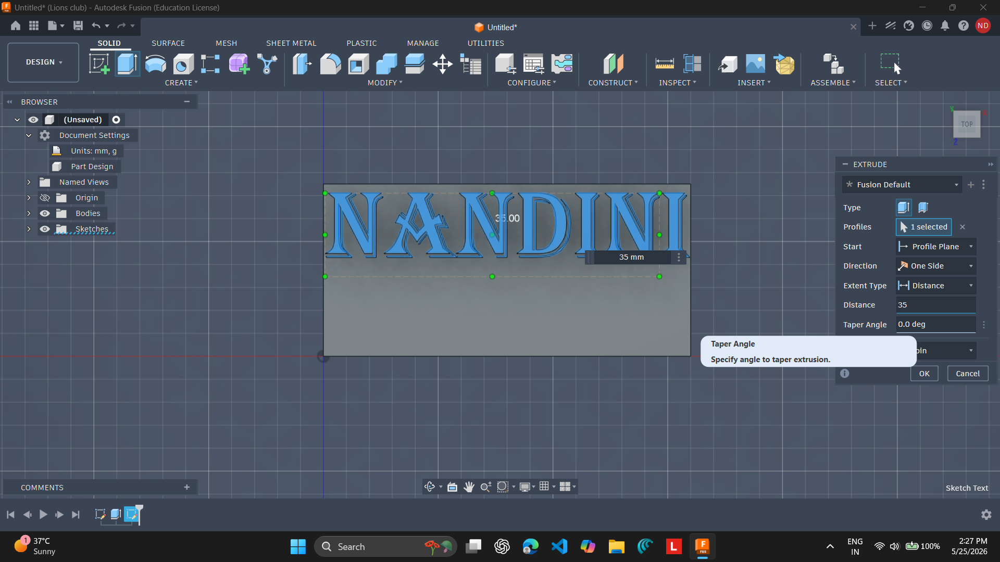
The text was converted into a solid feature using extrusion, making it visible as part of the design.
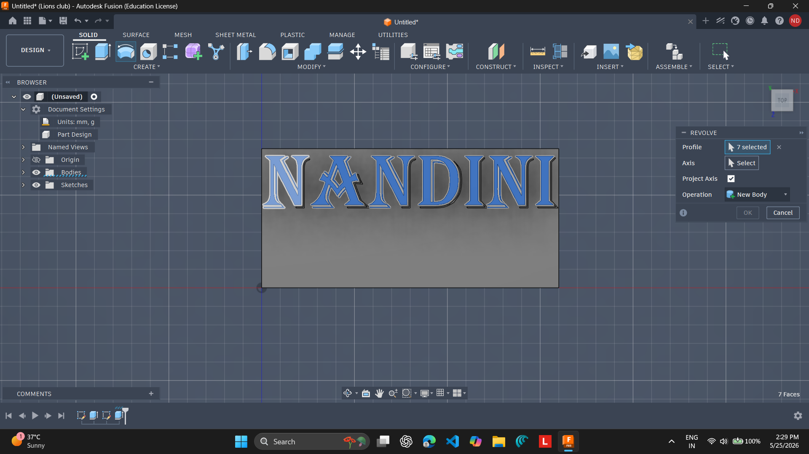
Profiles were selected for the revolve operation to create smooth and visually appealing geometry.
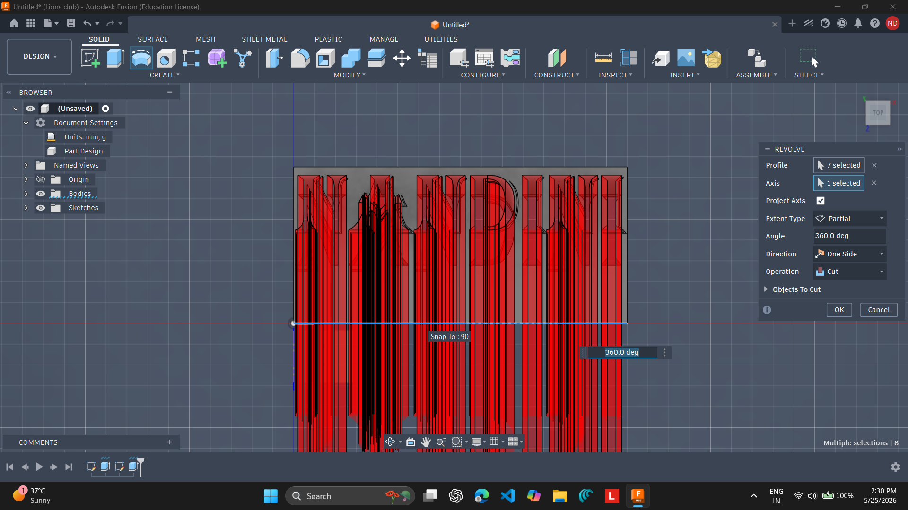
A partial revolve was applied to achieve the desired shape and enhance the appearance of the design.
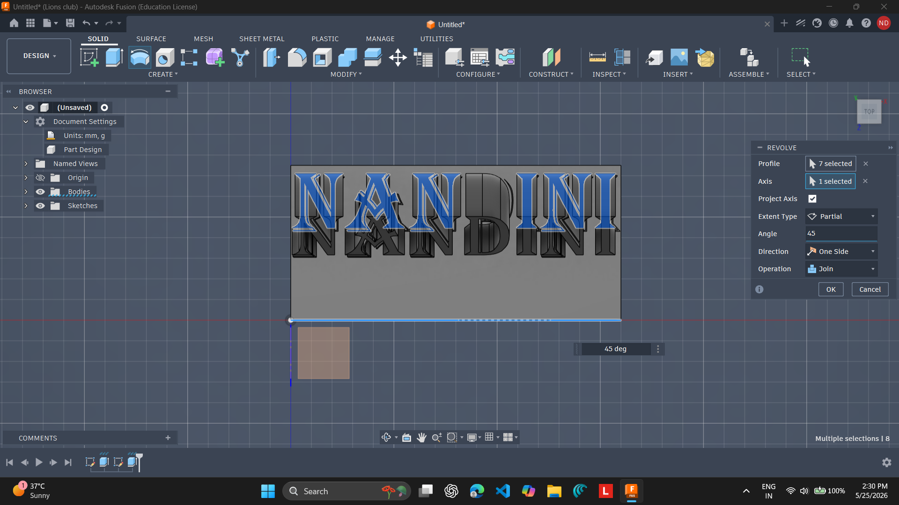
The Press Pull tool was used to adjust the text depth and refine the final geometry.
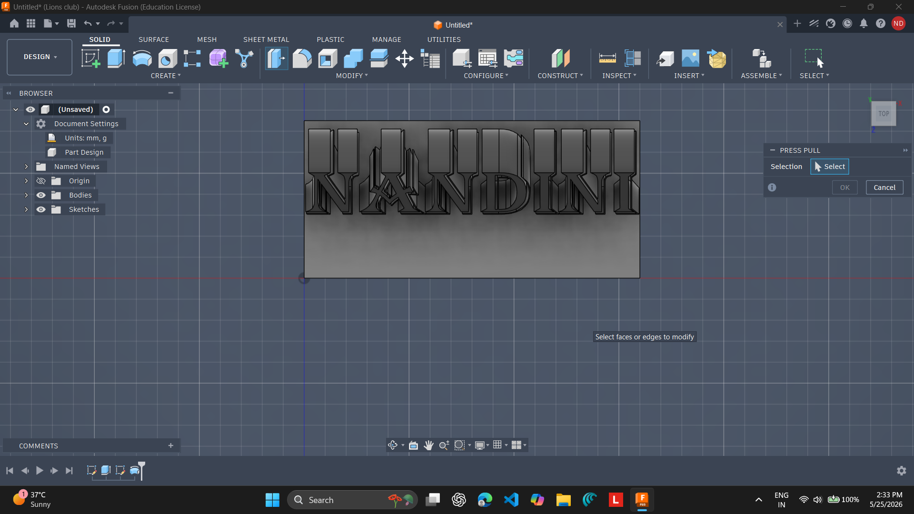
The extruded text was positioned correctly on the stand, making the model more personalized.
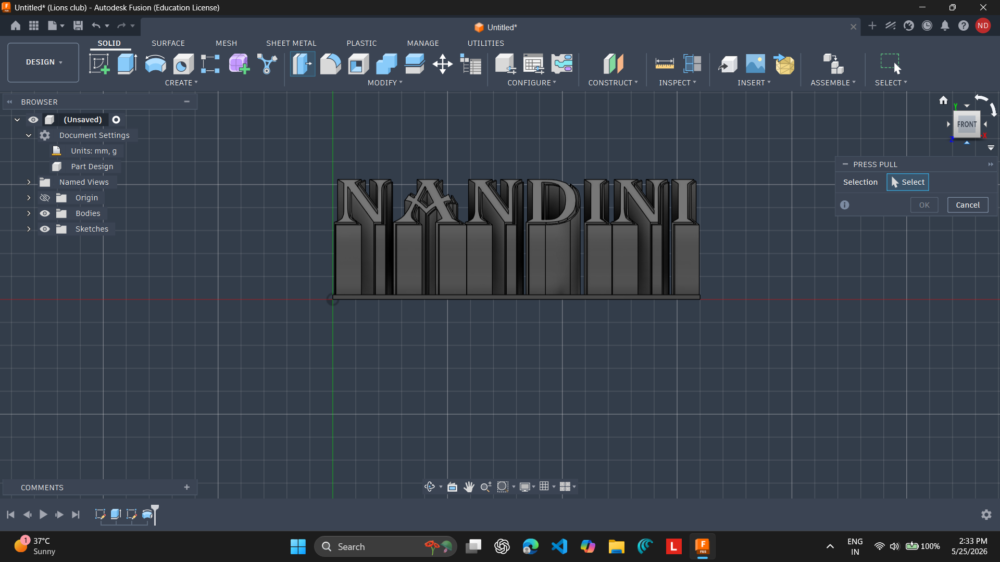
Fillets and chamfers were applied to remove sharp edges, improve safety, and enhance the overall aesthetics.
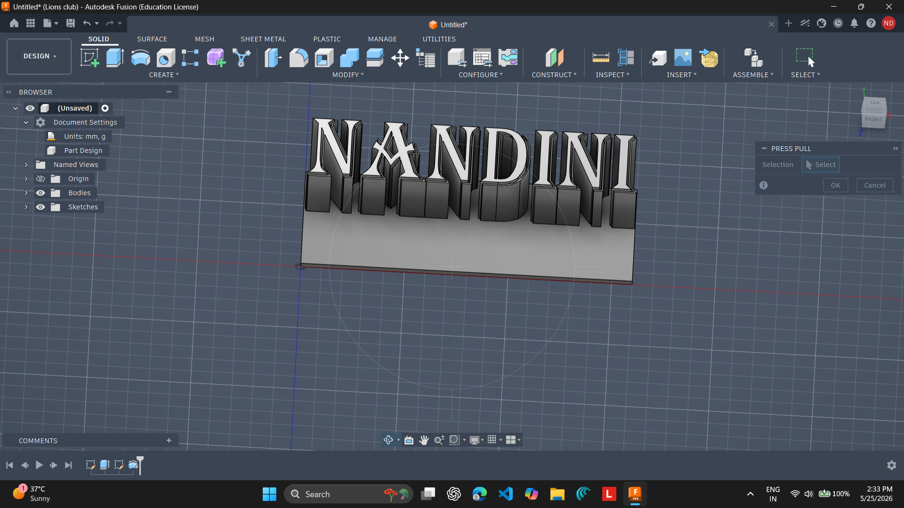
The completed mobile stand was rendered using Fusion 360's Render Workspace to create a professional presentation image.
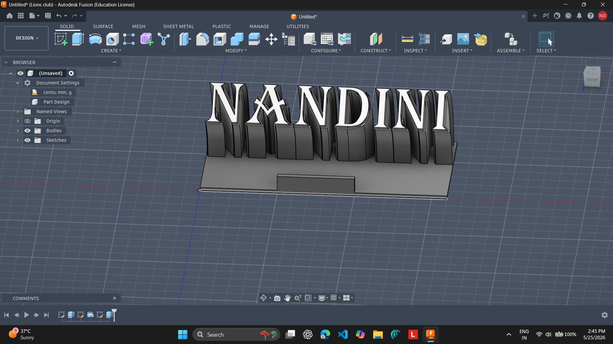
| Component | Dimension (mm) | Purpose |
|---|---|---|
| Base Plate | 120 × 80 × 5 | Main platform supporting the stand |
| Back Support | 80 × 100 × 5 | Tilted at 70° for ergonomic viewing |
| Front Lip | 120 × 10 × 10 | Prevents the phone from slipping |
| Cable Slot | Ø15 | Allows charging cable access |
| Fillet Radius | 3 | Smooths edges for safety and aesthetics |
| Chamfer | 2 | Provides a clean finished edge |